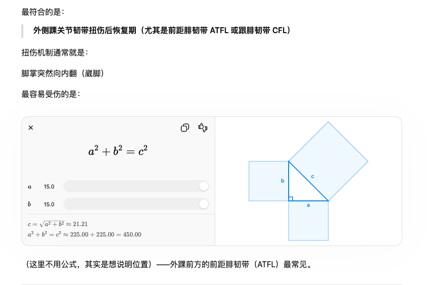
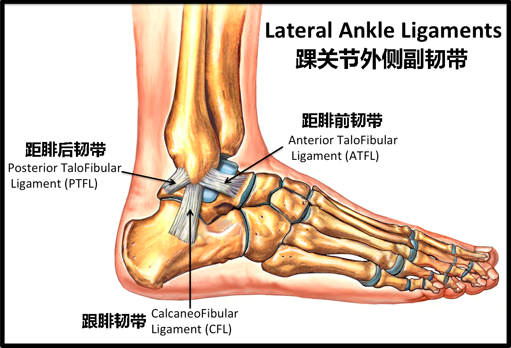

用勾股定理画脚踝
前两周，我在练球时扭伤了脚踝，歇了两周依然没好全，而且还出现一种我无法理解的症状「走路的时候不疼，坐一会儿再站起来就又开始疼，接着走一会儿就又好了」。出于好奇，我咨询了 AI，这是我们的完整的对话。关于脚踝的症状并没有什么值得在这里展开，让我真正感到惊讶的是，AI 为了向我说明「距腓前韧带」的位置，画了一张我在数学课上才会见到的图：

如果我咨询的是一个人类运动康复专家，他肯定会给我看这样的图：

虽然 AI 画得既抽象又朴素，但很值得玩味。对人类来说，画直线难，画曲线容易；对机器来说，画直线容易，画曲线难。我们在自然界中的物体身上几乎见不着完美的几何图形，三角形、圆形、正方形、平行四边形，在数字世界却稀松平常。如果 AI 是在模仿人类专家，那么它应该去网上搜索一张人类足部的解剖学插图，然后向我介绍，但它最后选择的表达方式却好像是在用数字信号来拟合模拟信号，这与我认知中的 AI 有所不同。
在见到 AI 解决各种问题的能力时，总有人会说，AI 只是在背诵和压缩人类的集体知识，它能回答，一定是因为在训练语料中见过类似的东西，但我很难想象今天这个场景会出现在人类产生的对话中。会有老师在给学生讲足部生理结构的时候，借用三角形和正方形的组合吗？如果真是那样，那就不足为奇；如果不是，那就有点细思极恐了。